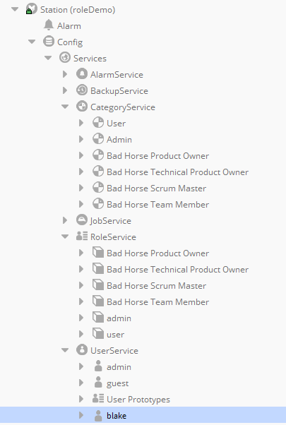
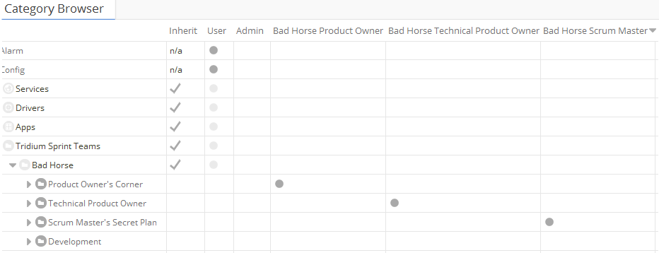
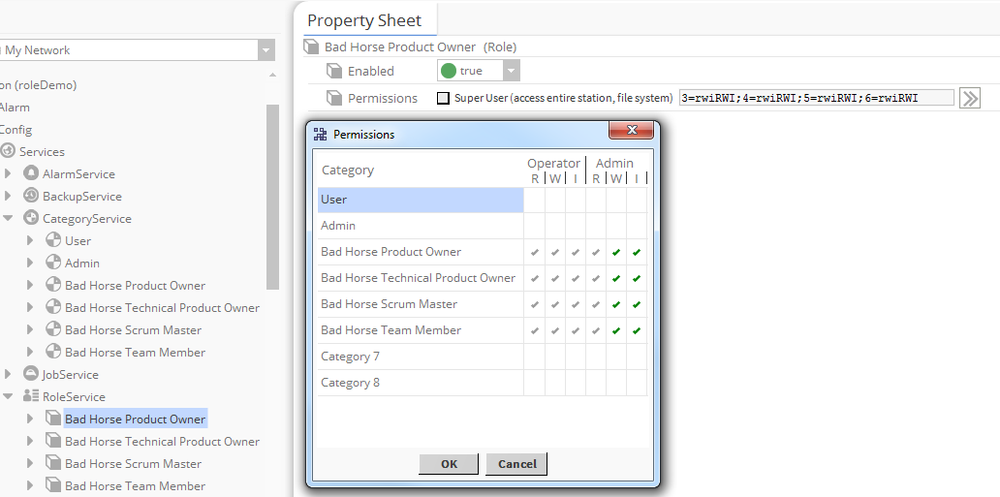
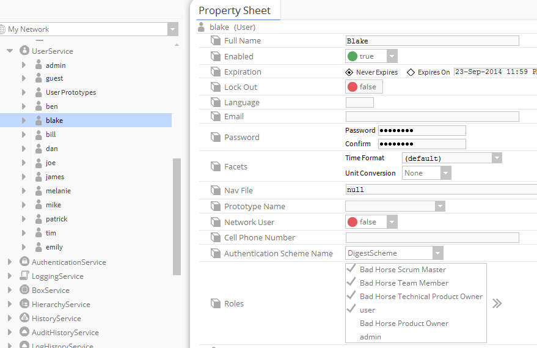
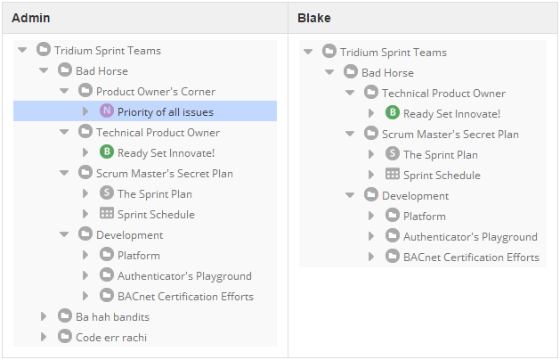
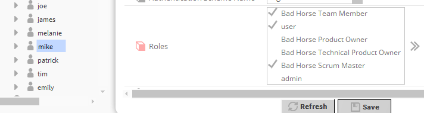
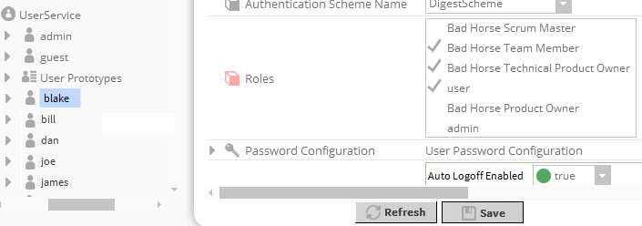
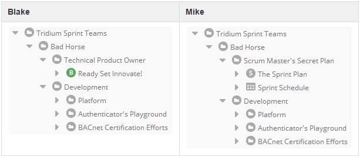

Niagara 4 introduces the use of roles for managing user access to the various components in a station. Rather than setting permissions directly on a BUser, permissions are assigned to BRoles, which are in turn assigned to BUsers.
In this document, we will go over:
Roles add a layer of abstraction between Users and PermissionsMaps to allow the reuse of PermissionsMaps between multiple users. The permissions of all users that have a role can now be managed in one place instead of updating multiple users. If there are 40 operators that need access to a new component in the station, only their shared operator role will need to be updated. The amount of initial configuration may be slightly higher in some configurations, however there is a trade off to save future configuration time that would be spent updating the permissions of multiple users.
Take the example ‘roleDemo’ station. This station is an example of how permissions of a sprint team can be modeled using roles instead of individual user permissions. Note that the categories (define collections of objects) still must be defined.

The security configuration of a Niagara station starts with the definition of categories. A category is simply a collection of Niagara objects.

Once the lists of objects to secure are defined into categories, permissions must be granted to Roles (this used to be done on the BUser).
Product Owners get to access everything under the sprint team, so let’s assign all permissions on all the categories we defined.

Now that we have defined the permissions of Roles we can associate users with those roles.
Let’s take a look at Blake’s permissions in the Sprint Team:

As you can see, Blake has all of the roles except for the ‘Product Owner’ Role. So when Blake logs into the station the only folder he does not have access to is the ‘Product Owner’ folder.
Just for reference here are all of the objects visible to each user:

So far this has been as much work as in previous releases. Now it is time for the payoff. Let’s make Mike the Scrum Master.

Blake might need a break, so let’s uncheck the Bad Horse Scrum Master role in his Property Sheet.

Then we can compare their views of the Bad Horse Folders:

So without harming any maps of permissions or altering categories of objects we updated the roles of current users.
Due to the changes to use Roles rather than permissions directly on the users, some changes have been made to the API.
Developers who interact or set a BUser’s BPermissionsMap directly will need to update their programs to manage a set of BRole objects instead.
The addition of roles is intended to ease managing the permissions of a large numbers of users. The permissions of a group of users (who are assigned to the same role) can be updated by changing one role’s permissions instead of updating each user’s permissions individually. In order to take advantage of the new functionality, code that currently manages a single user’s permissions will need to be updated to assign roles to users instead of permissions.
To set a user’s permissions to super user in the legacy system, you would call setPermissions on the BUser instance. In the new system, this can be accomplished by adding the ‘admin’ role to the User.
Niagara AX
BUser user = new BUser();
user.setPermissions(BPermissionsMap.SUPER_USER);
Niagara 4
BUser user = new BUser();
user.addRole(BRoleService.ADMIN_ROLE);
A role can be removed from a user with the removeRole method.
BUser user = new BUser();
user.removeRole(BRoleService.ADMIN_ROLE);
To add a new role to the system create the role, set the permissions and add it to the BRoleService, and set that role onto the user in question.
BIRole buildingOperator = new BRole();
//Building a permissions map is beyond the scope of this article.
BPermissionsMap operatorPermissions = new BPermissionsMap();
buildingOperator.setPermissions(operatorPermissions);
//From a workbench context
BIRoleService roleService = (BIRoleService) WbUtil.findService(this, BIRoleService.TYPE);
roleService.add("buildingOperator", buildingOperator);
BUser bob = new BUser();
bob.addRole("buildingOperator");
Modifying the permissions of all the building operators can now accomplished by modifying the permissions on one role.
BIRoleService roleService = (BIRoleService) WbUtil.findService(this, BIRoleService.TYPE);
BIRole role = roleService.get("buildingOperator");
//Clear all the permissions:
role.setPermissions(BPermissionsMap.DEFAULT);
//Grant the role super user permissions
role.setPermissions(BPermissionsMap.SUPER_USER);
During a maintenance event you can disable or enable certain roles as needed.
//If there is a technical support issue that needs to be investigated:
BIRole role = (BIRole) roleService.get("techSupport");
role.setEnabled(true);
...
//after the problem has been resolved
role.setEnabled(false);
This functionality should help discourage account sharing by allowing permissions to be defined once for each class of user.